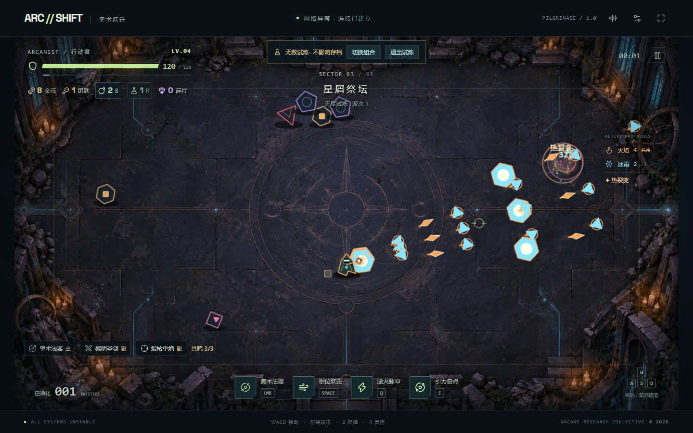
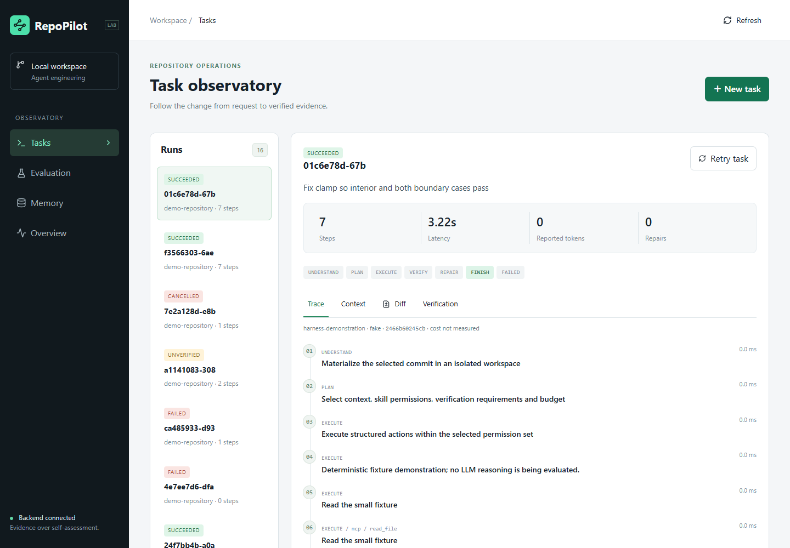
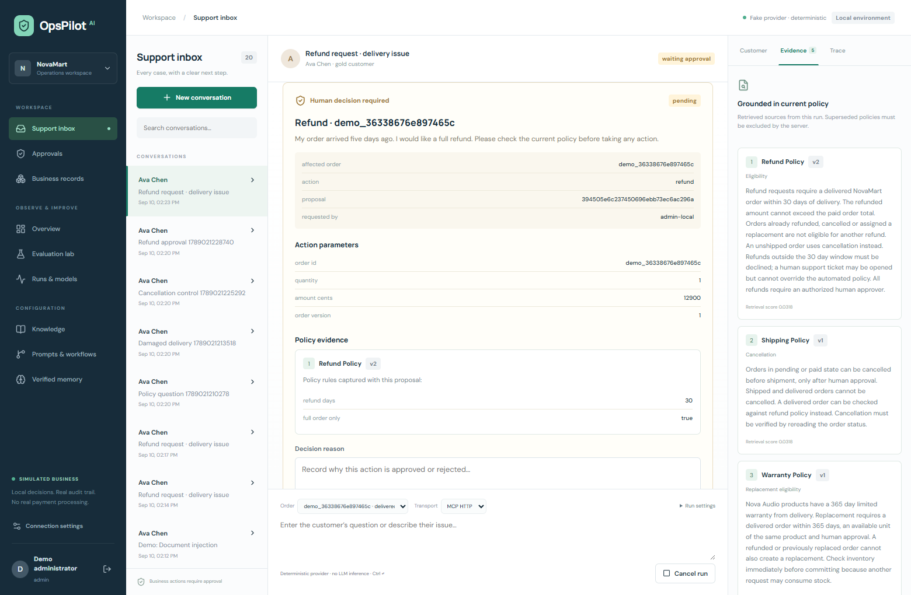
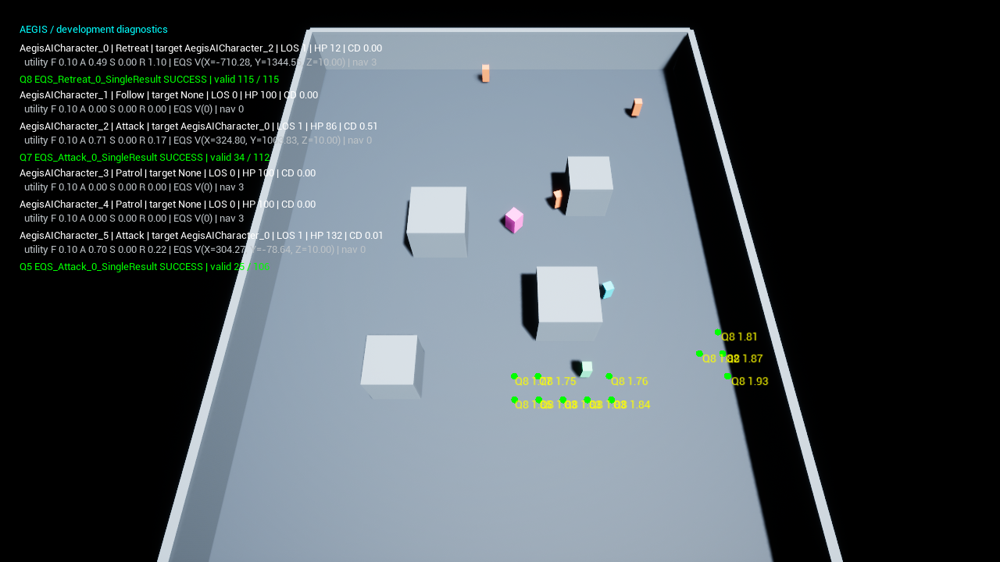
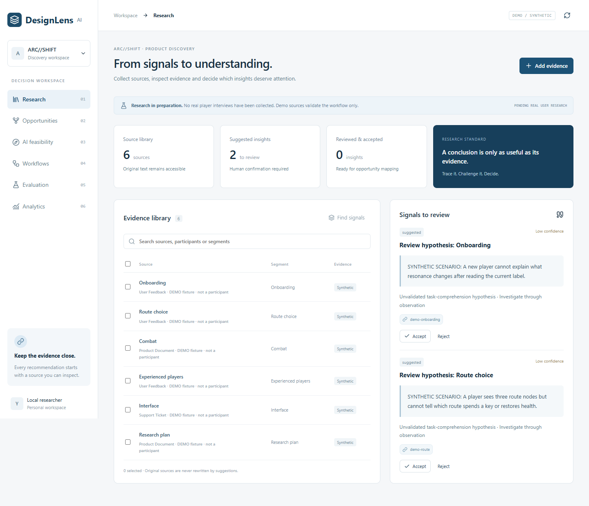

01GAMEPLAY & GAME ENGINEERING
{kind=link}

{kind=link}
范围与状态
截图保留真实 v1 玩法与工程工作台。本轮本地回归 151 单元 / 34 开发浏览器 / 4 生产检查通过。实验室复用碰撞函数且与存档隔离；历史 M8 Linux 全量记录可查，不宣称稳定 60 FPS。
本轮本地完整回归 · 历史 M8 Linux 全量通过五个可复现的工程项目，覆盖游戏系统、
Agent 执行、RAG 与产品决策。
从真实运行画面，走到源码、验证与取舍。
AI 辅助开发与文档整理
测试方法与适用范围见各项目记录。

截图保留真实 v1 玩法与工程工作台。本轮本地回归 151 单元 / 34 开发浏览器 / 4 生产检查通过。实验室复用碰撞函数且与存档隔离；历史 M8 Linux 全量记录可查，不宣称稳定 60 FPS。
本轮本地完整回归 · 历史 M8 Linux 全量通过
上方录屏使用 Fake 验证执行框架。另行完成真实 DeepSeek 受限修复：4 次调用、3 项独立测试通过。一个可见测试夹具不能估计普遍编码成功率；服务面向可信本机仓库。
Linux CI · 容器运行已验证
模拟业务不处理真实支付；历史 Agent 消融使用 Fake，BGE ONNX 检索实际运行。新增 DeepSeek 6 个合成意图样本匹配 5 个，误分类仍由服务端资格与审批边界约束。
Linux CI · 业务事务已验证
把 AI 决策放进真实 Unreal 场景中观察。
用 Utility、Behavior Tree 与 EQS 驱动角色选择和空间查询。原生场景显示决策、视线与导航状态，供比较策略行为和排查失败。
这是使用基础几何体的 AI 实验场。原生 60 次策略实验中双方均 0 胜。Utility 终局同伴死亡数较少，但观测窗口也更短，不能直接推断生存更久。原生程序可下载，交互页面只重加权已记录结果。
原生实验与独立包已验证
默认演示采用确定性摘录。另行完成 DeepSeek 三次合成证据调用，两项开发契约通过，过度弃答失败完整保留。真实访谈与产品实验仍未开展。
Linux CI · 用户研究待开展ARC//SHIFT 可以在线试玩。其余项目提供真实本机界面、录屏或 UE 原生截图；这里是公开作品入口，后台应用需按仓库说明启动。
打开游戏与演示已完成的 CI 直接链接对应运行。评估报告保留实验方法和失败；Fake、合成数据、未开展研究与未完成验收均就近标注。
查看媒体来源清单从架构和数据库，到关键代码、测试、性能、失败案例与面试追问。手册用于理解与复现，源码和原始记录是最终依据。
浏览面试手册本页不连接本机后台，也不要求输入 API Key。录屏按需加载，所有展示媒体来自项目的实际运行。
{kind=link}
{kind=link}
{kind=link}
{kind=link}